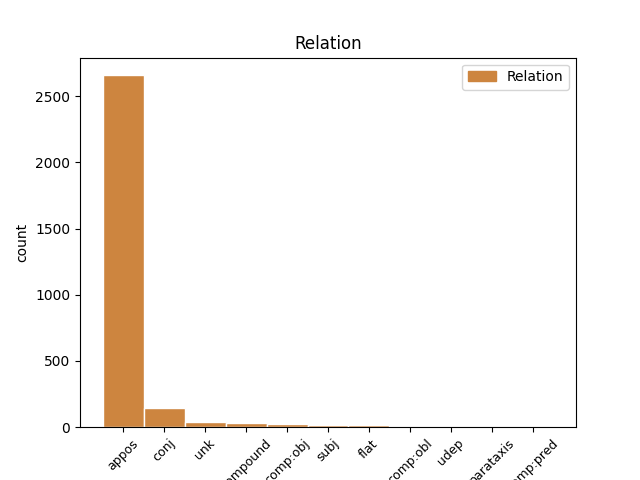

Distribution of features within this leaf

Agreement Rules sorted by frequency.
- When the dependent token is the appositional modifier(appos) of the head token, and the head token is NOUN and the dependent token is PROPN.
1 Küchendeutsch _ _ _ _ 0 _ _ _
2 wird _ _ _ _ 0 _ _ _
3 heute _ _ _ _ 0 _ _ _
4 nur _ _ _ _ 0 _ _ _
5 noch _ _ _ _ 0 _ _ _
6 von _ _ _ _ 0 _ _ _
7 etwa _ _ _ _ 0 _ _ _
8 15.000 _ _ _ _ 0 _ _ _
9 hauptsächlich _ _ _ _ 0 _ _ _
10 älteren _ _ _ _ 0 _ _ _
11 Namibiern _ _ _ _ 0 _ _ _
12 und _ _ _ _ 0 _ _ _
13 früheren _ _ _ _ 0 _ _ _
14 Angestellten _ _ _ _ 0 _ _ _
15 der _ _ _ _ 0 _ _ _
16 ehemaligen _ _ _ _ 0 _ _ _
17 Kolonialherren _ _ _ _ 0 _ _ _
18 verwendet _ _ _ _ 0 _ _ _
19 , _ _ _ _ 0 _ _ _
20 wovon _ _ _ _ 0 _ _ _
21 sich _ _ _ _ 0 _ _ _
22 auch _ _ _ _ 0 _ _ _
23 der _ _ _ _ 0 _ _ _
24 Name Name NOUN NN Case=Nom|Gender=Masc|Number=Sing 0 _ _ _
25 " _ _ _ _ 0 _ _ _
26 Küchendeutsch Küchendeutsch PROPN NN Case=Nom|Gender=Masc|Number=Sing 24 appos _ SpaceAfter=No
27 " _ _ _ _ 0 _ _ _
28 ableitet _ _ _ _ 0 _ _ _
29 . _ _ _ _ 0 _ _ _
1 Andere _ _ _ _ 0 _ _ _
2 Versionen _ _ _ _ 0 _ _ _
3 wurden _ _ _ _ 0 _ _ _
4 aus _ _ _ _ 0 _ _ _
5 Metall _ _ _ _ 0 _ _ _
6 , _ _ _ _ 0 _ _ _
7 Knochen Knochen NOUN NN Case=Dat|Gender=Neut|Number=Sing 0 _ _ _
8 , _ _ _ _ 0 _ _ _
9 Holz Holz PROPN NN Case=Dat|Gender=Neut|Number=Sing 7 conj _ _
10 ( _ _ _ _ 0 _ _ _
11 siehe _ _ _ _ 0 _ _ _
12 Burmesischer _ _ _ _ 0 _ _ _
13 Armschutz _ _ _ _ 0 _ _ _
14 ) _ _ _ _ 0 _ _ _
15 , _ _ _ _ 0 _ _ _
16 Elfenbein _ _ _ _ 0 _ _ _
17 , _ _ _ _ 0 _ _ _
18 Silber _ _ _ _ 0 _ _ _
19 oder _ _ _ _ 0 _ _ _
20 auch _ _ _ _ 0 _ _ _
21 vielen _ _ _ _ 0 _ _ _
22 anderen _ _ _ _ 0 _ _ _
23 Materialien _ _ _ _ 0 _ _ _
24 gefertigt _ _ _ _ 0 _ _ _
25 . _ _ _ _ 0 _ _ _
1 Es _ _ _ _ 0 _ _ _
2 erfolgten _ _ _ _ 0 _ _ _
3 auch _ _ _ _ 0 _ _ _
4 Anrufe _ _ _ _ 0 _ _ _
5 bei _ _ _ _ 0 _ _ _
6 in _ _ _ _ 0 _ _ _
7 der _ _ _ _ 0 _ _ _
8 " _ _ _ _ 0 _ _ _
9 Gaststätte _ _ _ _ 0 _ _ _
10 zu _ _ _ _ 0 _ _ _
11 der _ _ _ _ 0 _ _ _
12 F104 _ _ _ _ 0 _ _ _
13 " _ _ _ _ 0 _ _ _
14 in _ _ _ _ 0 _ _ _
15 Kerpen _ _ _ _ 0 _ _ _
16 - _ _ _ _ 0 _ _ _
17 Niederbolheim _ _ _ _ 0 _ _ _
18 bei _ _ _ _ 0 _ _ _
19 Köln _ _ _ _ 0 _ _ _
20 , _ _ _ _ 0 _ _ _
21 wo _ _ _ _ 0 _ _ _
22 der _ _ _ _ 0 _ _ _
23 erste _ _ _ _ 0 _ _ _
24 Paul Paul PROPN NN Case=Nom|Gender=Masc|Number=Sing 28 compound _ _
25 - _ _ _ _ 0 _ _ _
26 Panzer _ _ _ _ 0 _ _ _
27 - _ _ _ _ 0 _ _ _
28 Fanclub Fanclub NOUN NN Case=Nom|Gender=Masc|Number=Sing 0 _ _ _
29 Deutschlands _ _ _ _ 0 _ _ _
30 beheimatet _ _ _ _ 0 _ _ _
31 ist _ _ _ _ 0 _ _ _
32 . _ _ _ _ 0 _ _ _
1 August August PROPN NN Case=Nom|Gender=Masc|Number=Sing 14 unk _ _
2 1888 _ _ _ _ 0 _ _ _
3 in _ _ _ _ 0 _ _ _
4 St _ _ _ _ 0 _ _ _
5 Marychurch _ _ _ _ 0 _ _ _
6 bei _ _ _ _ 0 _ _ _
7 Torquay _ _ _ _ 0 _ _ _
8 , _ _ _ _ 0 _ _ _
9 England _ _ _ _ 0 _ _ _
10 ) _ _ _ _ 0 _ _ _
11 war _ _ _ _ 0 _ _ _
12 ein _ _ _ _ 0 _ _ _
13 englischer _ _ _ _ 0 _ _ _
14 Naturforscher Naturforscher NOUN NN Case=Nom|Gender=Masc|Number=Sing 0 _ _ _
15 . _ _ _ _ 0 _ _ _
1 Der _ _ _ _ 0 _ _ _
2 Lux Lux PROPN NN Case=Nom|Gender=Masc|Number=Sing 5 subj _ _
3 - _ _ _ _ 0 _ _ _
4 Konzern _ _ _ _ 0 _ _ _
5 beschäftigte beschäftigen VERB ADJA Case=Nom|Gender=Masc|Number=Sing 0 _ _ _
6 Ende _ _ _ _ 0 _ _ _
7 2009 _ _ _ _ 0 _ _ _
8 weltweit _ _ _ _ 0 _ _ _
9 rund _ _ _ _ 0 _ _ _
10 780 _ _ _ _ 0 _ _ _
11 Festangestellte _ _ _ _ 0 _ _ _
12 und _ _ _ _ 0 _ _ _
13 5.950 _ _ _ _ 0 _ _ _
14 Fachberater _ _ _ _ 0 _ _ _
15 . _ _ _ _ 0 _ _ _
1 In _ _ _ _ 0 _ _ _
2 dem _ _ _ _ 0 _ _ _
3 dritten _ _ _ _ 0 _ _ _
4 Quartal _ _ _ _ 0 _ _ _
5 2008 _ _ _ _ 0 _ _ _
6 waren _ _ _ _ 0 _ _ _
7 Wien _ _ _ _ 0 _ _ _
8 ( _ _ _ _ 0 _ _ _
9 1.681.469 _ _ _ _ 0 _ _ _
10 Einwohner _ _ _ _ 0 _ _ _
11 ) _ _ _ _ 0 _ _ _
12 , _ _ _ _ 0 _ _ _
13 Graz _ _ _ _ 0 _ _ _
14 ( _ _ _ _ 0 _ _ _
15 261.540 _ _ _ _ 0 _ _ _
16 Einwohner _ _ _ _ 0 _ _ _
17 ) _ _ _ _ 0 _ _ _
18 , _ _ _ _ 0 _ _ _
19 Linz _ _ _ _ 0 _ _ _
20 ( _ _ _ _ 0 _ _ _
21 189.528 _ _ _ _ 0 _ _ _
22 Einwohner _ _ _ _ 0 _ _ _
23 ) _ _ _ _ 0 _ _ _
24 , _ _ _ _ 0 _ _ _
25 Salzburg _ _ _ _ 0 _ _ _
26 ( _ _ _ _ 0 _ _ _
27 150.378 _ _ _ _ 0 _ _ _
28 Einwohner _ _ _ _ 0 _ _ _
29 ) _ _ _ _ 0 _ _ _
30 und _ _ _ _ 0 _ _ _
31 Innsbruck _ _ _ _ 0 _ _ _
32 ( _ _ _ _ 0 _ _ _
33 118.902 _ _ _ _ 0 _ _ _
34 Einwohner _ _ _ _ 0 _ _ _
35 ) _ _ _ _ 0 _ _ _
36 die _ _ _ _ 0 _ _ _
37 größten _ _ _ _ 0 _ _ _
38 Städte _ _ _ _ 0 _ _ _
39 in _ _ _ _ 0 _ _ _
40 Österreich _ _ _ _ 0 _ _ _
41 ( _ _ _ _ 0 _ _ _
42 lt. lt. ADP ADJA Case=Nom|Gender=Fem|Number=Sing 0 _ _ _
43 Statistik Statistik PROPN NN Case=Nom|Gender=Fem|Number=Sing 42 comp:obj _ _
44 Austria _ _ _ _ 0 _ _ _
45 ) _ _ _ _ 0 _ _ _
46 . _ _ _ _ 0 _ _ _
1 Urkunden _ _ _ _ 0 _ _ _
2 , _ _ _ _ 0 _ _ _
3 Amtsbücher _ _ _ _ 0 _ _ _
4 und _ _ _ _ 0 _ _ _
5 Akten _ _ _ _ 0 _ _ _
6 wurden _ _ _ _ 0 _ _ _
7 aus _ _ _ _ 0 _ _ _
8 dem _ _ _ _ 0 _ _ _
9 Hauptarchiv Hauptarchiv NOUN NN Case=Dat|Gender=Neut|Number=Sing 0 _ _ _
10 des _ _ _ _ 0 _ _ _
11 Sachsen _ _ _ _ 0 _ _ _
12 - _ _ _ _ 0 _ _ _
13 Ernestinischen _ _ _ _ 0 _ _ _
14 Gesamthauses Gesamthaus PROPN NN Case=Gen|Gender=Neut|Number=Sing 9 flat _ _
15 Weimar _ _ _ _ 0 _ _ _
16 und _ _ _ _ 0 _ _ _
17 ehemaligen _ _ _ _ 0 _ _ _
18 Klöstern _ _ _ _ 0 _ _ _
19 übernommen _ _ _ _ 0 _ _ _
20 . _ _ _ _ 0 _ _ _
1 übersetzt _ _ _ _ 0 _ _ _
2 : _ _ _ _ 0 _ _ _
3 sefer Sefer PRON VAFIN Case=Nom|Definite=Ind|Gender=Masc|Number=Sing|PronType=Ind 0 _ _ _
4 ha _ _ _ _ 0 _ _ _
5 - _ _ _ _ 0 _ _ _
6 olam _ _ _ _ 0 _ _ _
7 ha _ _ _ _ 0 _ _ _
8 - _ _ _ _ 0 _ _ _
9 qatan qatan PROPN NE Case=Nom|Gender=Masc|Number=Sing 3 flat _ SpaceAfter=No
10 , _ _ _ _ 0 _ _ _
11 " _ _ _ _ 0 _ _ _
12 Buch _ _ _ _ 0 _ _ _
13 des _ _ _ _ 0 _ _ _
14 Mikrokosmos _ _ _ _ 0 _ _ _
15 " _ _ _ _ 0 _ _ _
16 : _ _ _ _ 0 _ _ _
17 Vergleich _ _ _ _ 0 _ _ _
18 von _ _ _ _ 0 _ _ _
19 Makro _ _ _ _ 0 _ _ _
20 - _ _ _ _ 0 _ _ _
21 und _ _ _ _ 0 _ _ _
22 Mikrokosmos _ _ _ _ 0 _ _ _
23 ) _ _ _ _ 0 _ _ _
24 , _ _ _ _ 0 _ _ _
25 die _ _ _ _ 0 _ _ _
26 in _ _ _ _ 0 _ _ _
27 dem _ _ _ _ 0 _ _ _
28 Geist _ _ _ _ 0 _ _ _
29 des _ _ _ _ 0 _ _ _
30 Neuplatonismus _ _ _ _ 0 _ _ _
31 in _ _ _ _ 0 _ _ _
32 der _ _ _ _ 0 _ _ _
33 Tradition _ _ _ _ 0 _ _ _
34 des _ _ _ _ 0 _ _ _
35 Isaak _ _ _ _ 0 _ _ _
36 Israeli _ _ _ _ 0 _ _ _
37 und _ _ _ _ 0 _ _ _
38 des _ _ _ _ 0 _ _ _
39 Salomo _ _ _ _ 0 _ _ _
40 ibn _ _ _ _ 0 _ _ _
41 Gabirol _ _ _ _ 0 _ _ _
42 und _ _ _ _ 0 _ _ _
43 insbesondere _ _ _ _ 0 _ _ _
44 unter _ _ _ _ 0 _ _ _
45 dem _ _ _ _ 0 _ _ _
46 Einfluss _ _ _ _ 0 _ _ _
47 der _ _ _ _ 0 _ _ _
48 Lehren _ _ _ _ 0 _ _ _
49 der _ _ _ _ 0 _ _ _
50 " _ _ _ _ 0 _ _ _
51 Lauteren _ _ _ _ 0 _ _ _
52 Brüder _ _ _ _ 0 _ _ _
53 " _ _ _ _ 0 _ _ _
54 entstanden _ _ _ _ 0 _ _ _
55 . _ _ _ _ 0 _ _ _
1 Man _ _ _ _ 0 _ _ _
2 unterscheidet _ _ _ _ 0 _ _ _
3 in _ _ _ _ 0 _ _ _
4 trilobate trilobate ADJ ADJA Case=Acc|Gender=Fem|Number=Sing 0 _ _ _
5 - _ _ _ _ 0 _ _ _
6 ( _ _ _ _ 0 _ _ _
7 Paläoammonoidea Paläoammonoidea PROPN NE Case=Dat|Gender=Fem|Number=Sing 4 appos _ SpaceAfter=No
8 , _ _ _ _ 0 _ _ _
9 Devon _ _ _ _ 0 _ _ _
10 - _ _ _ _ 0 _ _ _
11 Perm _ _ _ _ 0 _ _ _
12 ) _ _ _ _ 0 _ _ _
13 , _ _ _ _ 0 _ _ _
14 quadrilobate _ _ _ _ 0 _ _ _
15 - _ _ _ _ 0 _ _ _
16 ( _ _ _ _ 0 _ _ _
17 Mesoammonoidea _ _ _ _ 0 _ _ _
18 Oberperm _ _ _ _ 0 _ _ _
19 - _ _ _ _ 0 _ _ _
20 Trias _ _ _ _ 0 _ _ _
21 ; _ _ _ _ 0 _ _ _
1 Der _ _ _ _ 0 _ _ _
2 durch _ _ _ _ 0 _ _ _
3 zahlreiche _ _ _ _ 0 _ _ _
4 Münzfunde _ _ _ _ 0 _ _ _
5 bezeugte _ _ _ _ 0 _ _ _
6 Sprewanenfürst Sprewanenfürst NOUN NN Case=Acc|Gender=Masc|Number=Sing 0 _ _ _
7 Jaxa Jaxa PROPN NE Case=Acc|Gender=Masc|Number=Sing 6 subj _ _
8 von _ _ _ _ 0 _ _ _
9 Köpenick _ _ _ _ 0 _ _ _
10 , _ _ _ _ 0 _ _ _
11 der _ _ _ _ 0 _ _ _
12 auf _ _ _ _ 0 _ _ _
13 der _ _ _ _ 0 _ _ _
14 Köpenicker _ _ _ _ 0 _ _ _
15 Burg _ _ _ _ 0 _ _ _
16 vermutlich _ _ _ _ 0 _ _ _
17 seinen _ _ _ _ 0 _ _ _
18 Hauptsitz _ _ _ _ 0 _ _ _
19 hatte _ _ _ _ 0 _ _ _
20 , _ _ _ _ 0 _ _ _
21 wurde _ _ _ _ 0 _ _ _
22 1157 _ _ _ _ 0 _ _ _
23 von _ _ _ _ 0 _ _ _
24 dem _ _ _ _ 0 _ _ _
25 Askanier _ _ _ _ 0 _ _ _
26 Albrecht _ _ _ _ 0 _ _ _
27 den _ _ _ _ 0 _ _ _
28 Bären _ _ _ _ 0 _ _ _
29 ( _ _ _ _ 0 _ _ _
30 1134-1170 _ _ _ _ 0 _ _ _
31 ) _ _ _ _ 0 _ _ _
32 bei _ _ _ _ 0 _ _ _
33 der _ _ _ _ 0 _ _ _
34 Eroberung _ _ _ _ 0 _ _ _
35 der _ _ _ _ 0 _ _ _
36 Brennaburg _ _ _ _ 0 _ _ _
37 entscheidend _ _ _ _ 0 _ _ _
38 geschlagen _ _ _ _ 0 _ _ _
39 und _ _ _ _ 0 _ _ _
40 vertrieben _ _ _ _ 0 _ _ _
41 . _ _ _ _ 0 _ _ _
1 An _ _ _ _ 0 _ _ _
2 dem _ _ _ _ 0 _ _ _
3 Dienstag _ _ _ _ 0 _ _ _
4 abend _ _ _ _ 0 _ _ _
5 waren _ _ _ _ 0 _ _ _
6 erneute _ _ _ _ 0 _ _ _
7 Gespräche _ _ _ _ 0 _ _ _
8 zwischen _ _ _ _ 0 _ _ _
9 Haushaltsexperten _ _ _ _ 0 _ _ _
10 des _ _ _ _ 0 _ _ _
11 Weißen _ _ _ _ 0 _ _ _
12 Hauses _ _ _ _ 0 _ _ _
13 und _ _ _ _ 0 _ _ _
14 des der DET ART Case=Gen|Definite=Def|Gender=Masc|Number=Sing|PronType=Art 0 _ _ _
15 von _ _ _ _ 0 _ _ _
16 den _ _ _ _ 0 _ _ _
17 Republikanern _ _ _ _ 0 _ _ _
18 beherrschten _ _ _ _ 0 _ _ _
19 Kongresses Kongreß PROPN NN Case=Gen|Gender=Masc|Number=Sing 14 conj _ _
20 ergebnislos _ _ _ _ 0 _ _ _
21 abgebrochen _ _ _ _ 0 _ _ _
22 worden _ _ _ _ 0 _ _ _
23 . _ _ _ _ 0 _ _ _
1 Während _ _ _ _ 0 _ _ _
2 die _ _ _ _ 0 _ _ _
3 Fremden _ _ _ _ 0 _ _ _
4 bei _ _ _ _ 0 _ _ _
5 einer _ _ _ _ 0 _ _ _
6 Stippvisite _ _ _ _ 0 _ _ _
7 über _ _ _ _ 0 _ _ _
8 Mala _ _ _ _ 0 _ _ _
9 abstürzten _ _ _ _ 0 _ _ _
10 , _ _ _ _ 0 _ _ _
11 sperrte _ _ _ _ 0 _ _ _
12 Kordsmeier _ _ _ _ 0 _ _ _
13 das _ _ _ _ 0 _ _ _
14 Gebiet _ _ _ _ 0 _ _ _
15 ab _ _ _ _ 0 _ _ _
16 und _ _ _ _ 0 _ _ _
17 sicherte _ _ _ _ 0 _ _ _
18 sich _ _ _ _ 0 _ _ _
19 die _ _ _ _ 0 _ _ _
20 Dienste _ _ _ _ 0 _ _ _
21 des _ _ _ _ 0 _ _ _
22 John John PROPN NE Case=Gen|Gender=Masc|Number=Sing 24 comp:pred _ _
23 Doe _ _ _ _ 0 _ _ _
24 genannten genannt ADJ ADJA Case=Gen|Gender=Masc|Number=Sing|VerbForm=Part 0 _ _ _
25 Schiffskochs _ _ _ _ 0 _ _ _
26 . _ _ _ _ 0 _ _ _
1 Sein _ _ _ _ 0 _ _ _
2 bekanntestes _ _ _ _ 0 _ _ _
3 Werk _ _ _ _ 0 _ _ _
4 ist _ _ _ _ 0 _ _ _
5 der _ _ _ _ 0 _ _ _
6 Bestseller _ _ _ _ 0 _ _ _
7 Sieben _ _ _ _ 0 _ _ _
8 Jahre _ _ _ _ 0 _ _ _
9 in _ _ _ _ 0 _ _ _
10 Tibet _ _ _ _ 0 _ _ _
11 , _ _ _ _ 0 _ _ _
12 in _ _ _ _ 0 _ _ _
13 dem der PRON ART Case=Dat|Definite=Def|Gender=Masc|Number=Sing|PronType=Art 0 _ _ _
14 Harrer Harrer PROPN NN Case=Dat|Gender=Masc|Number=Sing 13 unk _ _
15 seine _ _ _ _ 0 _ _ _
16 Zeit _ _ _ _ 0 _ _ _
17 mit _ _ _ _ 0 _ _ _
18 Peter _ _ _ _ 0 _ _ _
19 Aufschnaiter _ _ _ _ 0 _ _ _
20 in _ _ _ _ 0 _ _ _
21 Tibet _ _ _ _ 0 _ _ _
22 und _ _ _ _ 0 _ _ _
23 seine _ _ _ _ 0 _ _ _
24 Bekanntschaft _ _ _ _ 0 _ _ _
25 mit _ _ _ _ 0 _ _ _
26 dem _ _ _ _ 0 _ _ _
27 14 _ _ _ _ 0 _ _ _
28 . _ _ _ _ 0 _ _ _
1 So _ _ _ _ 0 _ _ _
2 verpflichtete _ _ _ _ 0 _ _ _
3 man _ _ _ _ 0 _ _ _
4 1995 _ _ _ _ 0 _ _ _
5 die _ _ _ _ 0 _ _ _
6 Dänen Däne NOUN NN Case=Acc|Gender=Masc|Number=Plur 0 _ _ _
7 Lars Lars PROPN NE Case=Nom|Gender=Masc|Number=Sing 6 comp:obj _ _
8 Hauth _ _ _ _ 0 _ _ _
9 und _ _ _ _ 0 _ _ _
10 Claus _ _ _ _ 0 _ _ _
11 Pedersen _ _ _ _ 0 _ _ _
12 . _ _ _ _ 0 _ _ _
1 Sie _ _ _ _ 0 _ _ _
2 bewirkt _ _ _ _ 0 _ _ _
3 neben _ _ _ _ 0 _ _ _
4 örtlichen _ _ _ _ 0 _ _ _
5 Versätzen _ _ _ _ 0 _ _ _
6 ein _ _ _ _ 0 _ _ _
7 Umbiegen _ _ _ _ 0 _ _ _
8 der _ _ _ _ 0 _ _ _
9 generell _ _ _ _ 0 _ _ _
10 NNW NNW PROPN NN Case=Gen|Gender=Fem|Number=Sing 14 comp:obj _ _
11 - _ _ _ _ 0 _ _ _
12 SSO _ _ _ _ 0 _ _ _
13 - _ _ _ _ 0 _ _ _
14 streichenden streichend ADJ ADJA Case=Gen|Gender=Fem|Number=Sing 0 _ _ _
15 Foliation _ _ _ _ 0 _ _ _
16 der _ _ _ _ 0 _ _ _
17 Gneise _ _ _ _ 0 _ _ _
18 in _ _ _ _ 0 _ _ _
19 die _ _ _ _ 0 _ _ _
20 Nordostrichtung _ _ _ _ 0 _ _ _
21 . _ _ _ _ 0 _ _ _
1 1970 _ _ _ _ 0 _ _ _
2 , _ _ _ _ 0 _ _ _
3 bei _ _ _ _ 0 _ _ _
4 dem _ _ _ _ 0 _ _ _
5 Training _ _ _ _ 0 _ _ _
6 zu _ _ _ _ 0 _ _ _
7 dem _ _ _ _ 0 _ _ _
8 Großen _ _ _ _ 0 _ _ _
9 Preis _ _ _ _ 0 _ _ _
10 von _ _ _ _ 0 _ _ _
11 Italien _ _ _ _ 0 _ _ _
12 in _ _ _ _ 0 _ _ _
13 Monza _ _ _ _ 0 _ _ _
14 , _ _ _ _ 0 _ _ _
15 verunglückte verunglücken ADJ VVFIN Case=Nom|Gender=Masc|Number=Sing 0 _ _ _
16 Rindt Rindt PROPN NE Case=Nom|Gender=Masc|Number=Sing 15 subj _ _
17 tödlich _ _ _ _ 0 _ _ _
18 . _ _ _ _ 0 _ _ _
1 Abetz _ _ _ _ 0 _ _ _
2 und _ _ _ _ 0 _ _ _
3 die _ _ _ _ 0 _ _ _
4 Botschaft _ _ _ _ 0 _ _ _
5 favorisierte favorisiert VERB VVFIN Case=Nom|Gender=Fem|Number=Sing 0 _ _ _
6 Laval Laval PROPN NE Case=Nom|Gender=Fem|Number=Sing 5 comp:obj _ _
7 und _ _ _ _ 0 _ _ _
8 Déat _ _ _ _ 0 _ _ _
9 , _ _ _ _ 0 _ _ _
10 während _ _ _ _ 0 _ _ _
11 die _ _ _ _ 0 _ _ _
12 SS _ _ _ _ 0 _ _ _
13 Jacques _ _ _ _ 0 _ _ _
14 Doriot _ _ _ _ 0 _ _ _
15 förderte _ _ _ _ 0 _ _ _
16 . _ _ _ _ 0 _ _ _
1 Ausgabe Ausgabe NOUN NN Case=Nom|Gender=Fem|Number=Sing 0 _ _ _
2 2003 _ _ _ _ 0 _ _ _
3 -- _ _ _ _ 0 _ _ _
4 Queenstown Queenstown PROPN NN Case=Nom|Gender=Fem|Number=Sing 1 parataxis _ SpaceAfter=No
5 : _ _ _ _ 0 _ _ _
6 Municipality _ _ _ _ 0 _ _ _
7 of _ _ _ _ 0 _ _ _
8 Queenstown _ _ _ _ 0 _ _ _
9 . _ _ _ _ 0 _ _ _
1 Cassiodor _ _ _ _ 0 _ _ _
2 überschreibt _ _ _ _ 0 _ _ _
3 einige _ _ _ _ 0 _ _ _
4 Auszüge _ _ _ _ 0 _ _ _
5 aus _ _ _ _ 0 _ _ _
6 Priscian _ _ _ _ 0 _ _ _
7 mit _ _ _ _ 0 _ _ _
8 der _ _ _ _ 0 _ _ _
9 Feststellung _ _ _ _ 0 _ _ _
10 , _ _ _ _ 0 _ _ _
11 dass _ _ _ _ 0 _ _ _
12 er _ _ _ _ 0 _ _ _
13 in _ _ _ _ 0 _ _ _
14 Konstantinopel _ _ _ _ 0 _ _ _
15 zu _ _ _ _ 0 _ _ _
16 seiner sein DET PPOSAT Case=Dat|Gender=Fem|Number=Sing|Poss=Yes 0 _ _ _
17 ( _ _ _ _ 0 _ _ _
18 Cassiodors Cassiodors PROPN NE Case=Dat|Gender=Fem|Number=Sing 16 appos _ SpaceAfter=No
19 ) _ _ _ _ 0 _ _ _
20 Zeit _ _ _ _ 0 _ _ _
21 gelehrt _ _ _ _ 0 _ _ _
22 habe _ _ _ _ 0 _ _ _
23 ( _ _ _ _ 0 _ _ _
24 Keil _ _ _ _ 0 _ _ _
25 , _ _ _ _ 0 _ _ _
26 Gr _ _ _ _ 0 _ _ _
27 . _ _ _ _ 0 _ _ _
1 Diese _ _ _ _ 0 _ _ _
2 grenzüberschreitenden _ _ _ _ 0 _ _ _
3 Projekte _ _ _ _ 0 _ _ _
4 realisiert _ _ _ _ 0 _ _ _
5 er _ _ _ _ 0 _ _ _
6 meist _ _ _ _ 0 _ _ _
7 zusammen _ _ _ _ 0 _ _ _
8 mit _ _ _ _ 0 _ _ _
9 dem _ _ _ _ 0 _ _ _
10 von _ _ _ _ 0 _ _ _
11 ihm er PRON PPER Case=Dat|Gender=Masc|Number=Sing|Person=3|PronType=Prs 0 _ _ _
12 und _ _ _ _ 0 _ _ _
13 Christian Christian PROPN NE Case=Nom|Gender=Masc|Number=Sing 11 conj _ _
14 Walter _ _ _ _ 0 _ _ _
15 1999 _ _ _ _ 0 _ _ _
16 gegründeten _ _ _ _ 0 _ _ _
17 Fagott _ _ _ _ 0 _ _ _
18 - _ _ _ _ 0 _ _ _
19 Duo _ _ _ _ 0 _ _ _
20 satyros _ _ _ _ 0 _ _ _
21 . _ _ _ _ 0 _ _ _
Disagree Examples:
1 Unser _ _ _ _ 0 _ _ _
2 Fazit Fazit NOUN NN Case=Nom|Gender=Neut|Number=Sing 0 _ _ _
3 : _ _ _ _ 0 _ _ _
4 Nie _ _ _ _ 0 _ _ _
5 wieder _ _ _ _ 0 _ _ _
6 Café Café PROPN NN Case=Nom|Gender=Masc|Number=Sing 2 appos _ _
7 Bleich _ _ _ _ 0 _ _ _
8 ! _ _ _ _ 0 _ _ _
1 Wir _ _ _ _ 0 _ _ _
2 sind _ _ _ _ 0 _ _ _
3 seit _ _ _ _ 0 _ _ _
4 vielen _ _ _ _ 0 _ _ _
5 Jahren _ _ _ _ 0 _ _ _
6 Mandanten _ _ _ _ 0 _ _ _
7 der _ _ _ _ 0 _ _ _
8 Rechtsanwälte Rechtsanwalt NOUN NN Case=Gen|Gender=Fem|Number=Sing 0 _ _ _
9 Ruland Ruland PROPN NE Case=Gen|Gender=Neut|Number=Sing 8 appos _ _
10 und _ _ _ _ 0 _ _ _
11 wurden _ _ _ _ 0 _ _ _
12 immer _ _ _ _ 0 _ _ _
13 optimal _ _ _ _ 0 _ _ _
14 in _ _ _ _ 0 _ _ _
15 bei _ _ _ _ 0 _ _ _
16 unseren _ _ _ _ 0 _ _ _
17 Probleme _ _ _ _ 0 _ _ _
18 und _ _ _ _ 0 _ _ _
19 Anliegen _ _ _ _ 0 _ _ _
20 unterstützt _ _ _ _ 0 _ _ _
21 . _ _ _ _ 0 _ _ _
1 2009 _ _ _ _ 0 _ _ _
2 bin _ _ _ _ 0 _ _ _
3 ich _ _ _ _ 0 _ _ _
4 zu _ _ _ _ 0 _ _ _
5 dem _ _ _ _ 0 _ _ _
6 Unternehmen Unternehmen NOUN NN Case=Dat|Gender=Neut|Number=Sing 0 _ _ _
7 Mentor Mentor PROPN NN Case=Dat|Gender=Masc|Number=Sing 6 appos _ _
8 Coaching _ _ _ _ 0 _ _ _
9 gekommen _ _ _ _ 0 _ _ _
10 . _ _ _ _ 0 _ _ _
1 Ich _ _ _ _ 0 _ _ _
2 finde _ _ _ _ 0 _ _ _
3 die _ _ _ _ 0 _ _ _
4 Pizzas _ _ _ _ 0 _ _ _
5 in _ _ _ _ 0 _ _ _
6 der _ _ _ _ 0 _ _ _
7 Pizzeria Pizzeria NOUN NN Case=Dat|Gender=Fem|Number=Sing 0 _ _ _
8 Venezia Venezia PROPN NE Case=Dat|Gender=Neut|Number=Sing 7 appos _ _
9 einfach _ _ _ _ 0 _ _ _
10 nur _ _ _ _ 0 _ _ _
11 mega _ _ _ _ 0 _ _ _
12 lecker _ _ _ _ 0 _ _ _
13 ! _ _ _ _ 0 _ _ _
14 ! _ _ _ _ 0 _ _ _
1 Unter _ _ _ _ 0 _ _ _
2 dem _ _ _ _ 0 _ _ _
3 Umstand Umstand NOUN NN Case=Dat|Gender=Masc|Number=Sing 0 _ _ _
4 , _ _ _ _ 0 _ _ _
5 dass _ _ _ _ 0 _ _ _
6 es _ _ _ _ 0 _ _ _
7 kein _ _ _ _ 0 _ _ _
8 anderes _ _ _ _ 0 _ _ _
9 Paintball Paintball PROPN NN Case=Acc|Gender=Neut|Number=Sing 3 comp:obj _ _
10 Unternehmen _ _ _ _ 0 _ _ _
11 in _ _ _ _ 0 _ _ _
12 unmittelbarer _ _ _ _ 0 _ _ _
13 Nähe _ _ _ _ 0 _ _ _
14 gibt _ _ _ _ 0 _ _ _
15 , _ _ _ _ 0 _ _ _
16 würde _ _ _ _ 0 _ _ _
17 ich _ _ _ _ 0 _ _ _
18 Paintball _ _ _ _ 0 _ _ _
19 Experience _ _ _ _ 0 _ _ _
20 weiterempfehlen _ _ _ _ 0 _ _ _
21 . _ _ _ _ 0 _ _ _